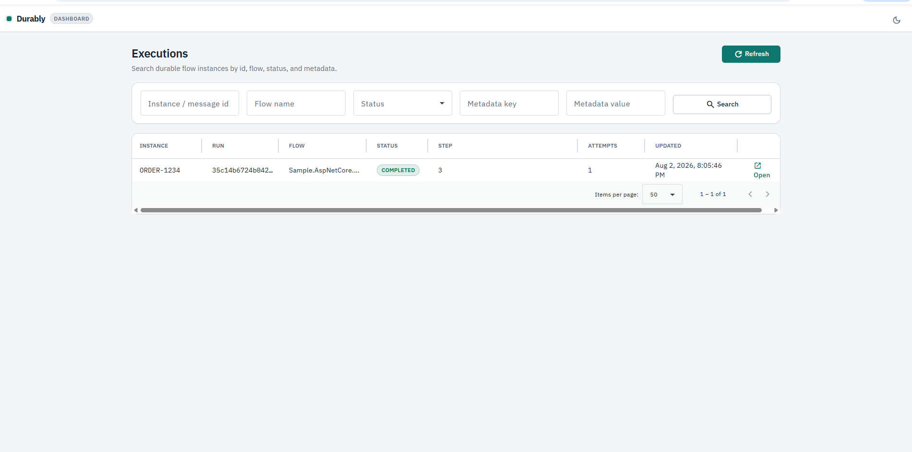
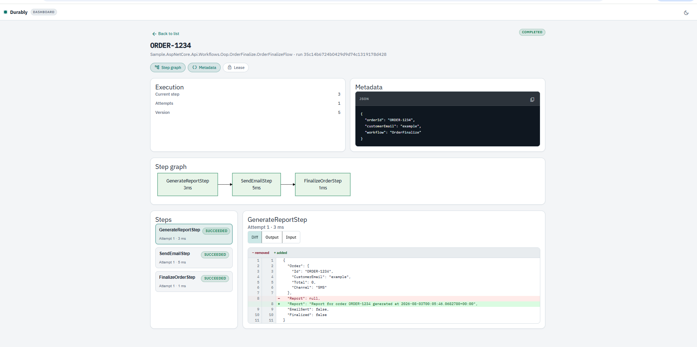

Durably
Durable workflows for .NET
Checkpointed steps, crash-safe resume, and optional monitoring in your app.
Why Durably
Durably is a simple .NET library for durable workflow execution inside your app.
You define workflows as ordinary C# steps with Flow.For or IFlow / IStep.
Branch like a state machine with StepIf and Choose.
Progress is checkpointed in your store. A hosted worker claims work with leases and resumes from the last completed step after a crash.
Not every workflow is a chain of events across services. Often a single service owns the whole flow and must run those steps as one durable unit.
Durable workflows in your service. Your store. Your process.
Where it fits
Use Durably when one service owns a multi-step workflow and needs durable, resumable execution.
- Strong fit Durable multi-step workflows and state-machine style branching inside a .NET service, with optional monitoring and UI.
- Microservices Each service can run its own flows, worker, and store.
- Use a message bus when coordination itself must cross service boundaries with events.
How it works
-
1
Start
StartAsyncinserts a Pending run with a businessInstanceIdand a systemRunId. -
2
Claim
The hosted worker claims due work under a lease so one runner owns the instance.
-
3
Checkpoint and resume
Each successful step saves state. After a crash, completed steps are skipped.
Packages
Host apps target .NET 6 through .NET 10. Core libraries also ship netstandard2.0.
Core
Durably.AbstractionsDurably.CoreDurably.Extensions.DependencyInjectionDurably.Persistence.InMemoryDurably.Persistence.EntityFrameworkCore
Extras
Durably.Traceabilitystep tracesDurably.UIembeddable dashboard
Typical app: Core + Extensions.DependencyInjection + one persistence package. Add Traceability and UI when you want them.
Dashboard
Search executions, open a run, and read step traces inside your ASP.NET Core app.


Get started
Install the packages you need, then define a flow and register Durably.
dotnet add package Durably.Extensions.DependencyInjection
dotnet add package Durably.Persistence.InMemoryvar flow = Flow.For<OrderFinalizeState>()
.Step<GenerateReportStep>()
.Step<SendEmailStep>()
.Step<FinalizeOrderStep>();
builder.Services
.AddDurably()
.UseInMemoryStore()
.AddFlow(flow);